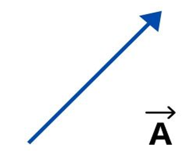
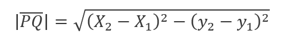
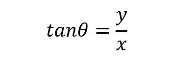

A straight line in space that starts from one point to another is known as a vector, this tells us that it has direction and magnitude. Furthermore, vectors in physics have a function to express, in this case vector magnitudes.
Vectors are represented graphically like an arrow. Likewise, when they must be expressed in a formula, they are represented by an arrow over a letter.
The dot product is a way to combine two vectors. Intuitively, it tells us something about how far two vectors point in the same direction. The dot product of two vectors results in a scalar number.
Example: Having the vectors U = (X1, Y1, Z1) and V = (X2, Y2, Z2).
The dot product is U*V and would be equal to = X1.X2 + Y1. Y2 + Z1. Z2 = K.
K is the scalar resulting from the multiplication of the vectors. That is, the dot product is the sum of the measurements multiplied by their respective vectors.
The magnitude of a vector PQ is the distance between the initial point P and the final point Q.
If the coordinates of the start point and end point of a vector are given, the distance formula can be used to find its magnitude.
You can calculate the magnitude of a vector entering the vector's values with this:
Result:
The direction of a vector is the measure of the angle that makes with a horizontal line. This is one of the formulas:
x is the horizontal change and y is the vertical change.
You can calculate the direction of a vector that have two inputs entering the vector's values with this:
Result in degrees: